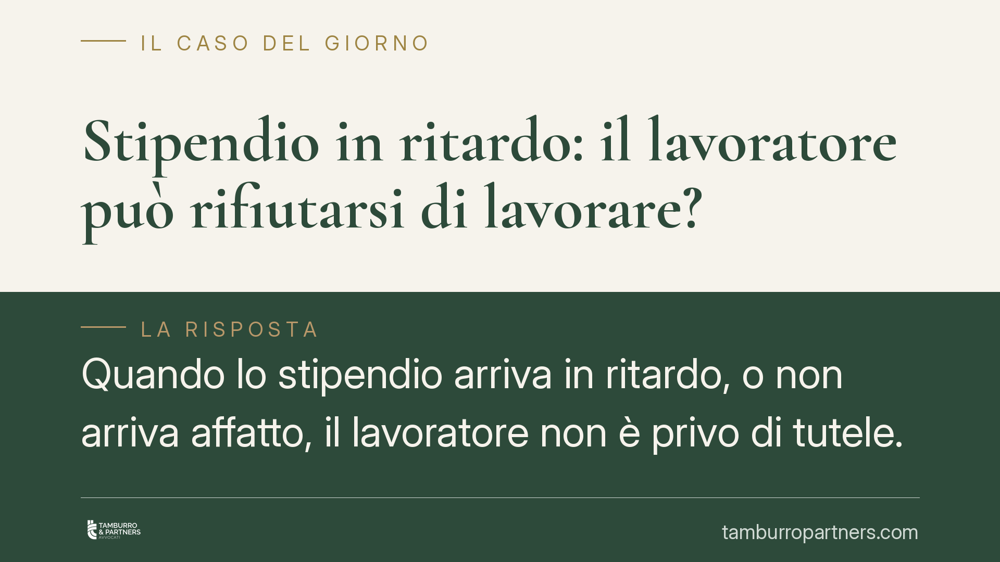

Stipendio in ritardo: il lavoratore può rifiutarsi di lavorare?
Quando lo stipendio arriva in ritardo, o non arriva affatto, il lavoratore non è privo di tutele. Può, entro limiti precisi, sospendere la prestazione, agire in giudizio per ottenere il pagamento o dimettersi per giusta causa. Ogni reazione, però, va calibrata sulla gravità del ritardo: eccedere espone al rischio di un licenziamento legittimo.

Il fatto e perché conta
Il ritardo nel pagamento della retribuzione è uno degli inadempimenti più frequenti nel rapporto di lavoro. La tentazione del lavoratore è immediata: "non lavoro finché non mi paghi". La reazione, in astratto, è ammessa dall'ordinamento, ma è tutt'altro che libera. Chi la utilizza in modo sproporzionato rischia di trasformarsi da parte lesa a parte inadempiente.
Inquadramento normativo
Lo strumento è l'eccezione di inadempimento prevista dall'art. 1460 del Codice civile: nei contratti a prestazioni corrispettive, ciascuna parte può rifiutare di eseguire la propria prestazione se l'altra non adempie o non offre di adempiere la sua. Applicata al rapporto di lavoro, significa che il dipendente può sospendere l'attività se il datore non paga.
Il secondo comma dell'art. 1460 c.c. fissa però il limite decisivo: il rifiuto non è consentito se, avuto riguardo alle circostanze, risulta contrario a buona fede. Qui entra in gioco il principio di proporzionalità: la sospensione deve essere adeguata alla gravità dell'inadempimento datoriale. Un ritardo di pochi giorni su una singola mensilità difficilmente giustifica l'astensione totale dal lavoro; il mancato pagamento di più mensilità è un'altra cosa.
Sullo sfondo opera l'art. 36 della Costituzione, che garantisce una retribuzione sufficiente ad assicurare al lavoratore e alla sua famiglia un'esistenza libera e dignitosa. La retribuzione, in altre parole, non è un elemento negoziabile qualunque: è il corrispettivo di un diritto costituzionalmente protetto.
Cosa dice la giurisprudenza
La giurisprudenza di legittimità riconosce da tempo la legittimità dell'eccezione di inadempimento del lavoratore, purché ricorrano due condizioni: che l'inadempimento datoriale sia grave e che la reazione sia proporzionata. La verifica è sempre in concreto, caso per caso, tenuto conto dell'entità delle somme non pagate, della durata del ritardo e delle condizioni economiche del dipendente. Non esiste, quindi, una soglia numerica automatica: il giudice valuta la vicenda nel suo complesso.
Implicazioni pratiche
La sospensione non è l'unica via, e spesso non è la più efficace. Il ritardo protratto nel pagamento configura un inadempimento del datore che legittima anche altre iniziative.
La prima è l'azione giudiziale per il recupero delle somme. Il credito retributivo, se documentato (buste paga, contratto, prospetti), può essere azionato con ricorso per decreto ingiuntivo: uno strumento rapido che consente di ottenere un titolo esecutivo per procedere, se necessario, al recupero forzato. A ciò può aggiungersi la richiesta di risarcimento del danno da ritardato pagamento.
La seconda riguarda l'uscita dal rapporto. Quando il mancato pagamento è tale da non consentire la prosecuzione, neppure provvisoria, del rapporto, il lavoratore può rassegnare le dimissioni per giusta causa ai sensi dell'art. 2119 c.c. Secondo un orientamento, tali dimissioni possono dare diritto all'indennità sostitutiva del preavviso a carico del datore, ma la questione non è pacifica in giurisprudenza: va valutata con prudenza e non data per acquisita.
Quanto alla NASpI, le dimissioni per giusta causa possono aprire l'accesso all'indennità di disoccupazione. L'accesso, però, non è automatico: presuppone l'accertamento della giusta causa e il rispetto dei requisiti contributivi ordinari. In caso di contestazione, il riconoscimento passa dalla verifica dell'INPS o, eventualmente, dal giudice.
Cosa fare in concreto
- Documenta tutto. Conserva buste paga, contratto, comunicazioni e prova dei mancati accrediti. Senza prova scritta del credito, ogni azione parte in salita.
- Invia una diffida scritta. Prima di sospendere l'attività, intima formalmente il pagamento con raccomandata o PEC, assegnando un termine. La diffida dimostra la tua buona fede.
- Valuta la proporzionalità. Rapporta la reazione alla gravità del ritardo. Sospendere il lavoro per un ritardo modesto può esporti a un provvedimento disciplinare.
- Considera il decreto ingiuntivo. Per il recupero delle somme, l'azione monitoria è spesso più efficace e meno rischiosa dell'autotutela.
- Confrontati con un professionista prima di agire. È opportuno un confronto professionale preventivo per scegliere lo strumento corretto ed evitare che la reazione si ritorca contro di te.
Disclaimer
Contributo informativo a cura di Tamburro & Partners - Avv. Giuseppe Tamburro. Non costituisce parere legale.
Ogni storia di lavoro ha i suoi tempi.
Se gestisci HR e vuoi un confronto su contenzioso, ispezioni o licenziamenti, scrivi allo studio. Ti rispondiamo entro un giorno lavorativo.